= Attack 1
= Attack 2
= Attack 3
= Attack 4
= Change Style
= Grab Weapon
=
=
=
=
=
= /
Pause/Movelist =
=
=
=
=
=
=
Pause/Movelist =
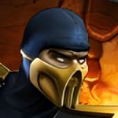
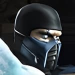
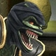
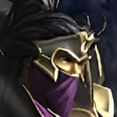
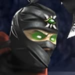
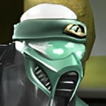
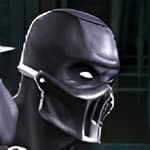
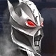
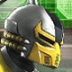
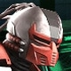
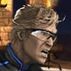
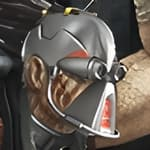
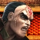
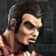
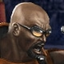
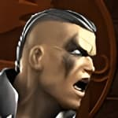
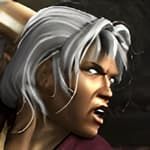
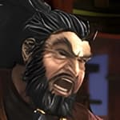
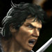
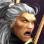
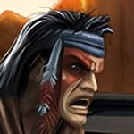
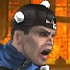
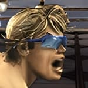
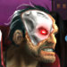
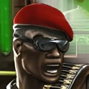
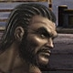
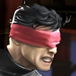
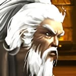
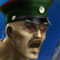
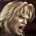
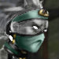
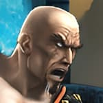
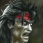
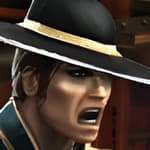
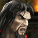
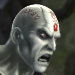
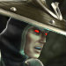
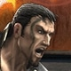
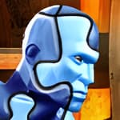
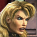
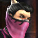
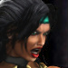
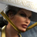
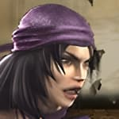
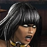
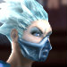
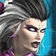
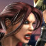
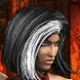
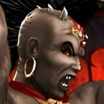
| Universal: = Attack 1 = Attack 2 = Attack 3 = Attack 4 = Change Style = Grab Weapon |
Xbox: = = = = = = / Pause/Movelist = |
PlayStation2: = = = = = = Pause/Movelist = |
| WiiMote: = = = = = = Pause/Movelist = Initiate Special Move Gesture = |
Wii (Classic Controller): = = = = = = Pause/Movelist = |
Wii (GameCube Controller): = = = = = = Pause/Movelist = |
| First Appearance: Mortal Kombat Deception (2004) Origin: The Netherrealm Alignment: Good / Forces of Light Allies: Shujinko Foes: Ermac, Noob Saibot, Brotherhood of the Shadow Fighting Style: Chou Jaio Weapon: Kriss "After slaying countless demons with the kriss I found in the Netherrealm, my soul was cleansed and I transcended that hell. I rose into a realm of radiant celestial beings who named me their chosen, an ascending demon. They revealed the kriss as a tool of purification, and I pledged myself to their will, to consume darkness and bring peace across all realms in their name. Sent to the dark realm of Vaeternus, I hunt a vile vampire race that feeds and spreads corruption unchecked. Each one I destroy strengthens both me and the blade, yet one escaped - Nitara. She fled beyond my reach, denying my victory. Now she is my final trial, for only through her destruction will I achieve true purification and ascend as a being of light." |
| First Appearance: Mortal Kombat II (1993) Origin: Outworld Alignment: Evil / Forces of Darkness Allies: Shao Kahn, Deadly Alliance, Dragon King Foes: Bo Rai Cho Fighting Style: Silat Weapon: Blades "As leader of the Tarkatan hordes, I am forged from Outworld flesh and Netherrealm fury. I have served many masters, following the promise of bloodshed above all else. My blades have carved through countless foes, earning favor from rulers like Shao Kahn, who prized my brutality. Loyalty has never guided me - only the thrill of battle and the savage instincts of my kind. Now Armageddon rises, and I fight with the Forces of Darkness, not for duty, but for war itself. The Tarkatan are not meant for peace; we exist to rend and destroy. Mileena shares my ferocity, though our bond is as violent as it is fleeting. This final conflict will define us. In endless battle, I will embrace my nature and lead my people in carnage." |
| First Appearance: Mortal Kombat Deadly Alliance (2002) Origin: Outworld Alignment: Good / Forces of Light Allies: Kung Lao, Kitana, Liu Kang Foes: Shang Tsung, Quan Chi, Baraka, Shao Kahn Fighting Style: Drunken Fist Weapon: Jojutsu "Though I hail from Outworld, I have never shared in its cruelty. I rejected Shao Kahn's rule and chose instead to aid Earthrealm, training warriors like Liu Kang to defend against tyranny. My methods may seem foolish, but beneath the guise of drink lies centuries of discipline and knowledge. I fight not for conquest, but to preserve balance across the realms. Now Armageddon looms, and I stand with the Forces of Light to resist the coming destruction. I have guided many champions, but this battle calls for more than wisdom alone. Though I was once barred from Mortal Kombat, I will not remain on the sidelines. The realms I cherish are in peril, and I will fight to protect them with all I have." |
| First Appearance: Mortal Kombat Trilogy (1996) - PlayStation/Sega Saturn Versions Origin: Zaterra (assumed) Alignment: Evil / Forces of Darkness Allies: Shao Kahn Foes: Anyone opposed to Shao Kahn Fighting Style: Crane Weapon: Ninja Sword "My kind, the Saurians, were nearly wiped out when Shao Kahn destroyed Zaterra. Like Khameleon and Reptile, I survived by adapting, becoming a master of camouflage and deception. Since the first Mortal Kombat, I have lingered in the shadows, watching Liu Kang's rise and the wars that followed. I endure through silence, mastering deception while the realms tear themselves apart. Now Armageddon draws me into the open at last. I fight for the Forces of Darkness, not out of loyalty, but purpose long delayed. I wield the skills of many warriors, shifting form and technique to overcome any foe. None can truly know me. From the shadows I have watched history unfold - now I will shape its end." |
| First Appearance: Mortal Kombat 3 (1995) Origin: Earthrealm Alignment: Good / Forces of Light Allies: Sonya, Jax, Kenshi, Nitara Foes: Sektor/Tekunin, Black/Red Dragon Fighting Style: Ninjitsu Weapon: Pulse Blade "Once Lin Kuei unit LK-4D4, I was stripped of my humanity and reforged as a machine. Yet my soul endured, breaking free from their control and guiding me toward a new purpose. I now serve with the Special Forces, defending Earthrealm from those who would see it fall. Though I am cybernetic, I fight with the will of the man I once was, not the weapon I was made to be. I have faced many threats, even aiding in the fall of Vaeternus without knowing it, and I now stand with the Forces of Light as Armageddon begins. Sektor hunts me as proof that his control can fail, but I will not yield. Each battle tests what remains of my humanity. In this final war, I fight not just for victory, but to reclaim my soul." |
| First Appearance: Mortal Kombat Deception (2004) Origin: Realm of Order (Seido) Alignment: Neutral / Forces of Darkness Allies: Darrius, Damashi Foes: Hotaru Fighting Style: Mi Zong Weapon: Autumn Dao "Once a guardsman of Seido, my life was shattered when my family was murdered and I was deceived into taking an innocent life. Branded a criminal, I was imprisoned and tortured by the very order I once served. I escaped, abandoning their laws and embracing chaos. Now I live as a mercenary, selling my skills without concern for cause or consequence. With Armageddon upon the realms, I fight for the Forces of Darkness, not out of loyalty, but opportunity. Chaos breeds profit, and men like me thrive in its wake. I take contracts where they lead, serving no master for long. Justice is a lie I no longer believe in. In this final war, I answer only to survival - and the highest bidder." |
| First Appearance: Mortal Kombat Deception (2004) Origin: Realm of Order (Seido) Alignment: Neutral / Forces of Darkness Allies: Havik Foes: Hotaru Fighting Style: Goju Ryu Weapon: Gauntlets "In Seido, law is absolute, but justice is hollow. I saw early that Orderrealm's senate used its rules to maintain power, not fairness. I abandoned my post as a guardsman and built a resistance in the shadows, striking at the system through calculated chaos. My methods are ruthless, but necessary to expose the corruption at the heart of order. Now Armageddon offers the chance to tear it all down. I fight with the Forces of Darkness, knowing their victory will shatter Seido's rigid control. Hotaru stands as the symbol of all I oppose, and our conflict will not end quietly. From the ashes of order, I will help forge a new world where power is claimed, not inherited." |
| First Appearance: Mortal Kombat Deadly Alliance (2002) Origin: The Netherrealm Alignment: Evil / Forces of Darkness Allies: Moloch Foes: Scorpion, Quan Chi Fighting Style: Hung Gar Weapon: Iron Club "Once a cruel, vicious landlord, I was cast into the Netherrealm to suffer for my sins, only to rise as something far worse. Now an Oni tormentor, I revel in agony, wielding my iron club against the damned. My rotting flesh and swarming flies mark what I have become, but I embrace it. Pain is power, and I have mastered both through endless torment. Now Armageddon calls, and I answer with hunger. I fight for the Forces of Darkness, drawn by the promise of suffering on a grand scale. Alongside Moloch, I have crushed souls without mercy, and this war will offer more than ever before. The realms will burn, and I will feast on the fallen, growing stronger with every scream." |
| First Appearance: Ultimate Mortal Kombat 3 (1996) Origin: Outworld (Created by Shao Kahn) Alignment: Good / Forces of Light Allies: Kenshi, Liu Kang Foes: Dragon King, Ashrah Fighting Style: Choy Lay Fut Weapon: Axe "We are many, bound into one by Shao Kahn's dark sorcery, forged from the souls of fallen Edenian warriors. For years we served as his enforcers, a singular force composed of countless wills. Our strength was unmatched, yet within us raged constant conflict, thousands of voices struggling for dominance over a single body. After Kahn's fall, we were cast adrift, lost in purpose until freed by Kenshi. Now we seek understanding of our nature - weapon, or being? The Forces of Light may guide us. As Armageddon rises, we fight not for conquest but to claim our own destiny. Only through battle can we learn if we are one or many." |
| First Appearance: Mortal Kombat Deadly Alliance (2002) Origin: Born in Earthrealm, ancestors from Outworld Alignment: Evil / Forces of Darkness Allies: Unknown Foes: Sub-Zero, Sonya Fighting Style: Tong Bei Weapon: Daggers "Sub-Zero saw potential in me and took me as his apprentice, but he underestimated my ambition. The Dragon Medallion he wore was never meant for someone like me. When I sought its power, it overwhelmed me, encasing me in ice and leaving me for dead. The cold preserved me, but it also hardened my resentment and sharpened my resolve. Now freed from that icy prison, I seek revenge against Sub-Zero for abandoning me. His Lin Kuei embodies tradition, restraint, and false honor - all I reject. The Forces of Darkness offer the power I need to remake the clan in my image. In this final battle, I will show that I have surpassed my master in every way that truly matters." |
| First Appearance: Mortal Kombat 4 (1998) Origin: The Heavens Alignment: Good / Forces of Light Allies: Raiden Foes: Shinnok Fighting Style: Liu He Weapon: Devastator "I have watched Raiden change, and the god I knew seems lost. His actions are no longer tempered by mercy; he defends Earthrealm with the ruthless precision of Shao Kahn. Worse, Liu Kang's reanimated corpse now serves him, striking down friend and foe alike. Kung Lao and I have joined forces, hoping to save them - but if there is no redemption, we may be forced to end them ourselves. When reunited with Johnny Cage, I learned of Shinnok's return and the stirring of a greater power. Kenshi spoke of Taven and Daegon, long missing, whose roles were shrouded in mystery. I must intercept them, uncover the truth of their quest, and ensure evil does not corrupt Argus's designs. Armageddon is rising, and I fear my intervention may come too late." |
| First Appearance: Mortal Kombat (1992) Origin: Outworld Alignment: Evil / Forces of Darkness Allies: Shao Kahn Foes: Baraka, Kitana Fighting Style: Shokan Weapon: Dragon Fangs "As Prince of the Shokan, I have served Shao Kahn for centuries, leading his armies to countless victories. My four arms have torn apart all who challenged Outworld's supremacy. Even when thought dead after Liu Kang's triumph, I survived, biding my time until I could reclaim my honor and restore the might of my people. I aided Kahn in reclaiming his throne, crushing Mileena's Edenian forces alongside Shang Tsung. Now, under his command, I defend the fortress against all intruders. As Armageddon rises, I fight for the Forces of Darkness, ensuring the Shokan endure and dominate whatever new threat emerges from the chaos of war." |
| First Appearance: Mortal Kombat Deception (2004) Origin: Realm of Chaos Alignment: Neutral / Forces of Darkness Allies: Kabal, Kira, Kobra, Darrius Foes: Hotaru, Dragon King Fighting Style: Tang Soo Do Weapon: Morning Star "Chaos is the natural order of existence. Orderrealm's laws are a blight, smothering life in rigid rules. As a cleric of Chaosrealm, I devote myself to tearing down this illusion, spreading disorder wherever I tread. My methods are extreme, but through them, minds are freed from the tyranny of structure and control. Armageddon is the perfect stage for my work, where certainty shatters and chaos reigns. I fight with the Forces of Darkness, not for their goals, but because their victory will dissolve the old order. When their power falls, reality will awaken in its truest form - unpredictable, untamed, and glorious." |
| First Appearance: Mortal Kombat Deception (2004) Origin: Realm of Order (Seido) Alignment: Neutral / Forces of Darkness Allies: Dragon King Foes: Dairou, Sub-Zero, Darrius Fighting Style: Pi Gua Weapon: Naginata "I am a general of Seido, sworn to preserve law and order across the realms. Centuries of enforcing structure have honed my resolve, punishing those who defy the natural hierarchy. Though Outworld has long been a source of chaos, I once fought to maintain peace under its rulers, vowing to protect the city of Lei Chen and bring insurgents to justice. Now, with Armageddon upon the realms, I fight alongside the Forces of Darkness, convinced that the Dragon King Onaga can restore true order. I pursue Sub-Zero and others who oppose this vision, believing that the restoration of hierarchy is worth any alliance. In this final battle, I will see that law prevails, no matter the cost to friend or foe." |
| First Appearance: Mortal Kombat Deadly Alliance (2002) Origin: Earthrealm Alignment: Evil / Forces of Darkness Allies: Mavado, Red Dragon Foes: Black Dragon, Special Forces Fighting Style: Sumo Weapon: Sunmoon Blades "For years, I served the Outer World Investigation Agency in secret, masking my allegiance while waiting for the perfect moment. As a Red Dragon operative, I destroyed their underground base and revealed my treachery. Though Jax thought me dead, Red Dragon technology rebuilt me stronger than before, my body now a weapon of pure vengeance. Now, Daegon's plan guides me: to seize Blaze's power for the Forces of Darkness. My cybernetic heart drives me with ruthless efficiency, and I will see the Special Forces crushed for their interference. Jax will fall, Earthrealm will burn, and the Red Dragon will rise from its ashes - its strength channeled through me, unstoppable and absolute." |
| First Appearance: Mortal Kombat II (1993) Origin: Edenia Alignment: Good / Forces of Light Allies: Kitana, Sindel Foes: Tanya, Mileena Fighting Style: Fan Zi Weapon: Bojutsu "My loyalty to Edenia and Kitana has never faltered, even when others questioned my motives. I betrayed Shao Kahn's service when I thwarted an attempt on Kitana's life, and I have since devoted myself to protecting Edenian royalty. Sindel and Kitana are under my constant guard, and I will not allow betrayal to harm them again. Now, as Armageddon unfolds, I fight with the Forces of Light against those who threaten Edenia. Tanya's repeated treachery cannot go unpunished. My skills in combat and stealth serve our cause, but it is my unwavering dedication to justice that drives me. In this final battle, I will defend Edenia's future and honor those who fell for it." |
| First Appearance: Mortal Kombat 4 (1998) Origin: Earthrealm Alignment: Evil / Forces of Darkness Allies: Kano, Kabal Foes: Sonya, Jax, Shinnok Fighting Style: Dragon Weapon: Kick Axe "Raised by the Black Dragon clan, I was trained to kill without remorse, ruthless and efficient under Kano's tutelage. When he was captured, I took command, extending our influence across the realms. My hatred for Jax runs deep; he embodies the law I have spent my life evading, a constant reminder of the order I despise. Quan Chi offered me the path to vengeance, and I accepted. As Armageddon rises, I fight with the Forces of Darkness, perfecting my skills and preparing for the day Jax falls. Victory will restore the Black Dragon to its full might, and I will ensure that those who betrayed me pay the ultimate price. Justice is nothing - power is all." |
| First Appearance: Mortal Kombat II (1993) Origin: Earthrealm Alignment: Good / Forces of Light Allies: Sonya Blade Foes: Kano, Hsu Hao Fighting Style: Muay Thai Weapon: Tonfa "The mission to destroy Sektor's Tekunin warship turned into a nightmare. Captured and subjected to horrific experiments, my cybernetics were enhanced, but my mind was altered, amplifying aggression and suppressing memories of Sonya and the Special Forces. For weeks, I existed as their weapon, my own identity nearly lost. During a Red Dragon raid, I escaped, but the Tekunin's programming still whispers in my cybernetics. As Armageddon approaches, I fight with the Forces of Light, not only for Earthrealm, but to reclaim the man I once was. Every battle is a struggle to silence the darkness they implanted and regain the soul I thought lost." |
| First Appearance: Mortal Kombat (1992) Origin: Earthrealm Alignment: Good / Forces of Light Allies: Liu Kang, Sonya, Raiden Foes: Shang Tsung, Goro, Movie Critics Fighting Style: Shorin Ryu Weapon: Nunchaku "It used to be that when Earthrealm faced danger, Raiden rallied the Forces of Light, uncovering every hidden truth. I fought beside him while Liu Kang led as our champion, supporting him from the shadows. But everything changed. Raiden grew distant and ruthless, Liu Kang fell, and we are now scattered, uncertain, and leaderless. Then the visions began. I saw the fallen Elder God Shinnok moving through the realms, commanding unseen minions. I tracked him to Shang Tsung's fortress, where he revealed Quan Chi and his schemes to rise again. I struck, but he escaped. A new threat has emerged, and Earthrealm's fate depends on reuniting the scattered Forces of Light - and on me to lead them." |
| First Appearance: Mortal Kombat 3 (1995) Origin: Earthrealm Alignment: Evil / Forces of Darkness Allies: Kano Foes: Mavado Fighting Style: Sun Bin Weapon: Hookswords "Once a ruthless enforcer of the Black Dragon, I survived Shao Kahn's invasion scarred but unbroken. Attacked by Mavado, who stole my weapons and nearly ended me, I sought purpose beyond mere survival. Havik's intervention restored my path, and I vowed to rebuild the Black Dragon stronger and more disciplined than before. With new recruits Kira and Kobra, I forged a clan that embodies strength and cunning, leaving weakness behind. Now, as Armageddon erupts, the Black Dragon rises with me, fighting alongside the Forces of Darkness. Our vengeance and dominance will echo across the realms, proving that the Black Dragon are stronger than ever." |
| First Appearance: Mortal Kombat 4 (1998) Origin: Earthrealm Alignment: Good / Forces of Light Allies: Raiden, Liu Kang, Kung Lao Foes: Quan Chi, Tanya, Shinnok Fighting Style: Moi Fah Weapon: Spiked Club "The White Lotus Society taught me to master both mind and body, seeking balance within myself and the world. Under Liu Kang's guidance, I learned to harness my inner fire. His fall left a void, but also a lesson: attachment leads to suffering. I continue my journey, wandering the realms to test my skill and understanding. Armageddon approaches, threatening to tip existence into chaos or suffocating order. I fight with the Forces of Light, not for allegiance, but to preserve equilibrium. Every battle is a measure of balance, and I will walk this narrow path, facing any threat necessary to ensure the realms endure." |
| First Appearance: Mortal Kombat (1992) Origin: Earthrealm Alignment: Evil / Forces of Darkness Allies: Kabal, Jarek Foes: Sonya, Jax, Mavado Fighting Style: Xing Yi Weapon: Butterfly "Oi, I've always had a knack for survival, and Armageddon's no different. A bloke like me - crooked, crude, and bloody rotten - oughta be outta place in a world-ending mess, but here I am. From leading the Black Dragon to runnin' merc jobs, I've seen it all. Life's a gamble, and I play to win, never left behind, never caught flat-footed. The Red Dragon had me locked up, muckin' about with me like some lab rat, tryin' their hybrid experiments. Escaped, of course - can't turn me into some dragon freak. Now I roll with the Forces of Darkness, playin' the game proper. Loyalty's for mugs; survival and profit's the name of it. When the dust settles, I'll be standin' last, pockets full, and grinnin' at the chaos I thrived in." |
| First Appearance: Mortal Kombat Deadly Alliance (2002) Origin: Earthrealm Alignment: Good / Forces of Light Allies: Sonya, Jax, Sub-Zero Foes: Shang Tsung Fighting Style: Tai Chi Weapon: Katana "The sword of Sento chose me, granting me sight beyond sight but at a terrible cost – my own eyes. Blindness sharpened my other senses and awakened telekinetic powers, allowing me to perceive threats unseen. Guided by my ancestors' blade, I hunt those who prey on the innocent, striking from the shadows with precision and deadly intent. The Red Dragon Clan's machinations soon drew me into a greater conflict. Their experiments with Saurian DNA and pursuit of Daegon's ambitions threatened all realms. Though I once walked alone, the sword's call compels me to stand with the Forces of Light. As Armageddon approaches, I will lead where my blade dictates, seeing the truths others cannot and striking to preserve the balance of existence." |
| First Appearance: Mortal Kombat II (1993) Origin: Outworld Alignment: Evil / Forces of Darkness Allies: Shao Kahn Foes: Raiden Fighting Style: Tiger Fist Weapon: Saber Teeth "From the subterranean kingdom of Kuatan, I am Kintaro of the Tigrar-Shokan, bred for savagery and loyalty. I have served Shao Kahn for years, leading elite troops, crushing all who defied his rule. While Goro is the noble Shokan, my ferocity and cunning define the Tigrar, and I wield it without mercy or hesitation. When Goro fell, I rose to uphold Kahn's might, only to be bested by Liu Kang. That loss sharpened my rage and honed my strength. Now resurrected alongside Goro, I march with the Forces of Darkness through Armageddon, striking down all who oppose the Shokan and securing our brutal claim as the rightful rulers of Outworld." |
| First Appearance: Mortal Kombat Deception (2004) Origin: Earthrealm Alignment: Evil / Forces of Darkness Allies: Kabal, Kobra Foes: Shujinko and his allies Fighting Style: Yuan Yang Weapon: Dragon Teeth "I am Kira, the first recruit of Kabal's new Black Dragon, forged in the mountains of Afghanistan, trained in subterfuge, weapons, and survival. In the dense Botan Jungle, I stand alongside Kobra under Kabal's command, preparing to strike at Red Dragon scouts with precision and ruthless efficiency. Now, as Armageddon erupts, I march with the Forces of Darkness, my blades sharpened and ready in my hands. The Black Dragon topples foes without mercy, seizing opportunity in the chaos. I am Kira, sharpened by training, loyalty, and ambition, ready to carve a new era from the ruins of the old." |
| First Appearance: Mortal Kombat II (1993) Origin: Edenia Alignment: Good / Forces of Light Allies: Liu Kang, Sindel, Jade Foes: Shao Kahn, Mileena Fighting Style: Ba Gua Weapon: Steel Fan "Finally freed from Onaga's control by Liu Kang, I returned to Edenia, warned by Blaze of a looming threat that could consume all realms. Weary from endless war but resolute, I gather the Forces of Light, ready to defend my home and confront the chaos that threatens everything I hold dear. Ten thousand years under Shao Kahn as his stepdaughter and assassin shaped me, but the truth of my past and my mother Sindel's death forged my resolve. Liu Kang's loss left a void, yet I fight on, confronting Mileena and standing for Edenia, determined to honor the legacy of those who sacrificed for the realms' survival." |
| First Appearance: Mortal Kombat Deception (2004) Origin: Earthrealm Alignment: Evil / Forces of Darkness Allies: Kira, Kabal Foes: Shujinko and his allies Fighting Style: Kickboxing Weapon: Machete "In the dense Botan Jungle, I move under Kabal's command alongside Kira, striking at Red Dragon scouts with lethal precision. Once a street thug, my martial arts skills and ruthless instincts made me the perfect recruit for the new Black Dragon. Every step and strike is honed to enforce Kabal's vision of chaos and power. As Armageddon erupts, I fight with the Forces of Darkness, the Black Dragon's blade in the chaos of battle. Every opponent slain sharpens my skill, every clash fuels my hunger for power. I thrive in bloodshed and destruction, ready to carve my name into the final war and prove myself among the strongest in the realms." |
| First Appearance: Mortal Kombat II (1993) Origin: Earthrealm Alignment: Good / Forces of Light Allies: Liu Kang, Raiden Foes: Shang Tsung, Shao Kahn Fighting Style: Shaolin Fist Weapon: Broadsword "The shadow of my ancestor guides me, yet I carve my own path as a warrior of Earthrealm. Liu Kang's death weighs heavily - I trained with him, fought beside him, and now must carry our mission alone. Fujin and I have watched Raiden's transformation with concern, knowing that if no solution is found, we may be forced to finish what he cannot undo. As Armageddon nears, I stand with the Forces of Light alongside Fujin, my razor-edged hat ready for battle. The realms face annihilation, yet my resolve is steadfast. I fight to honor Liu Kang's memory and ensure Earthrealm survives the coming darkness, even if it means opposing those I once called allies." |
| First Appearance: Mortal Kombat Deadly Alliance (2002) Origin: Outworld Alignment: Good / Forces of Light Allies: Bo' Rai Cho Foes: Shang Tsung, Quan Chi, Kano Fighting Style: Lui He Ba Fa Weapon: Kunlun Dao "My village was sacrificed to Shang Tsung's flesh pits, our souls devoured to restore his power. I was meant to serve as his vessel, but Onaga intervened, saving me at a terrible cost - my soul bound to him as an enslaved warrior. With Shujinko's guidance, I reclaimed my freedom, though my spirit bears lasting scars. Now I fight with the Forces of Light, defending the innocent and persecuted. The rage for those who exploited me fuels my strength, and every battle I face is for justice. Though my soul is marked by suffering, my will to protect the realms burns brighter than ever, a beacon for those who cannot fight for themselves." |
| First Appearance: Mortal Kombat (1992) Origin: Earthrealm Alignment: Good / Forces of Light Allies: Raiden, Kung Lao Foes: Shang Tsung, Quan Chi, Shinnok, Tanya, Dragon King Fighting Style: Jun Fan Weapon: Nunchaku "Death was not the end I expected. After Raiden's blast incinerated me, my spirit lingered as my body was reanimated, forced to slaughter innocents in the guise of protection. Only my bond with Kitana kept my mind alive, watching helplessly as my corpse obeyed a corrupted purpose. Nightwolf became my voice, allowing me to influence events despite my body's actions. I've learned of Armageddon and Blaze's role in it. Though my corpse still serves Raiden, my allegiance lies with the Forces of Light. I will reclaim or destroy my body to preserve the legacy of Earthrealm's true champion." |
| First Appearance: Mortal Kombat Deadly Alliance (2002) Origin: Earthrealm Alignment: Evil / Forces of Darkness Allies: Hsu Hao, Daegon Foes: Black Dragon, Special Forces Fighting Style: Long Fist Weapon: Hookswords "As leader of the Red Dragon, my life is defined by vengeance and dominance. I hunted the Black Dragon across realms, seeking to erase them completely. Shinnok's fall and the Deadly Alliance's betrayals disrupted my plans, and Kabal's return kept the war alive. In the final conflict, I served Daegon, pursuing Blaze and confronting Taven. Though defeated, I survived through skill and cunning. Now I march with the Forces of Darkness - not for loyalty, but for strategy - determined to see the Red Dragon claim supremacy or perish in Armageddon." |
| First Appearance: Mortal Kombat II (1993) Origin: Outworld Alignment: Evil / Forces of Darkness Allies: Baraka, Shang Tsung Foes: Kitana Fighting Style: Mian Chuan Weapon: Sai "Created from Kitana's essence and Tarkatan blood, I am Mileena - beautiful, deadly, and untethered by morality. While Kitana clings to royalty, I embrace my true nature: predatory, savage, and delightfully chaotic. I once seized Shao Kahn's fortress, commanding Edenian forces in the name of "peace," and reveled in the chaos that followed. Now, as Armageddon nears, I march with the Forces of Darkness. Shao Kahn's return complicates my plans, but I serve while secretly growing my power among the Tarkatan hordes. Kitana's existence is an insult to my perfection - I will see her destroyed and claim Outworld as mine, reveling in the carnage that will pave my throne." |
| First Appearance: Mortal Kombat Deadly Alliance (2002) Origin: Earthrealm Alignment: Good / Forces of Light Allies: Johnny Cage Foes: Jackie Chan Fighting Styles: Jeet Kune Do / Wing Chun Weapon: N/A "I was Johnny Cage's motion capture stuntman, performing behind the scenes to bring digital warriors to life. One strange surge of energy changed everything, granting me the ability to channel the skills and essence of the fighters I'd portrayed. Fantasy and reality collided, and my life became a battlefield I never expected. Now, as Armageddon looms, I stand with the Forces of Light. Though an unlikely hero, my unique talents - mimicking the moves and powers of legendary kombatants - make me a vital ally. The fate of the realms may rest on a stuntman's shoulders, and I will fight to ensure balance endures." |
| First Appearance: Mortal Kombat Deadly Alliance (2002) Origin: The Netherrealm Alignment: Evil / Forces of Darkness Allies: Drahmin Foes: Scorpion, Quan Chi Fighting Style: Moloch Weapon: N/A "I am Moloch, a monstrous Oni from the Netherrealm, a creature of immense strength and simple pleasures. I care not for schemes, only for the glorious sound of bone shattering under my club. With Drahmin, I was one of Quan Chi's Oni Tormentors, crushing the skulls of countless souls who dared defy him. Our reputation for destruction was absolute, a legacy written in blood and broken bodies. Now, as Armageddon approaches, I fight for the Forces of Darkness, drawn by the promise of endless slaughter. This battle is not for realms or masters; it is for me. The chance to tear flesh and break bodies on a scale never before seen is a joy I cannot resist. I will crush and kill until my arms are tired, for that is my purpose and my ecstasy." |
| First Appearance: Mortal Kombat 3 (1995) Origin: Outworld Alignment: Evil / Forces of Darkness Allies: Shao Kahn Foes: Those against Shao Kahn, Shokan Fighting Style: Horse Weapon: N/A "I am Motaro, and the Shokan's treachery has turned my proud Centaurian form into this bipedal abomination. Every awkward movement on these cursed legs fuels my rage, a constant reminder of their arrogance. As leader of Shao Kahn's extermination squads, I once proved our superiority, slaying many of Earthrealm's warriors. Now, that power feels hollow without my true form and the honor that was stolen from me. The Battle of Armageddon offers more than victory; it offers retribution. I will carve a path through this chaos to Goro, Kintaro, and Sheeva, making them pay with their lives for their curse. Their deaths will restore Centaurian honor and remind all who challenge us that even in this diminished form, our might remains unmatched. Shao Kahn himself will fall before my vengeance is complete." |
| First Appearance: Mortal Kombat 3 (1995) Origin: Earthrealm Alignment: Good / Forces of Light Allies: Liu Kang, Raiden, Kung Lao Foes: Dragon King, Shao Kahn Fighting Style: Val Tudo Weapon: Tomahawks "After imprisoning Onaga's corrupt soul, I passed through the spirit world, emerging in Earthrealm surrounded by wolves - my spirit guides. The Ancients warned of a coming storm where warriors would be manipulated by a hidden evil. I learned that Shinnok had returned, assembling the Forces of Darkness, and I agreed to aid Johnny Cage and the Forces of Light in their struggle. At the summit, Kitana arrived with the spirit of Liu Kang, her bond with him keeping his energies intact. I took on the role of Liu Kang's spiritual anchor, transferring the bond to myself. To help Liu Kang find peace and defeat the darkness, I must reach a higher level of shamanic power. The battle is far from over, and my journey continues." |
| First Appearance: Mortal Kombat Deadly Alliance (2002) Origin: Vaeternus Alignment: Neutral / Forces of Darkness Allies: Cyrax Enemies: Shao Kahn, Ashrah Fighting Style: Leopard Weapon: Kama "With Vaeternus freed from Shao Kahn's control, I was hailed as a hero, helping restore our people to glory. But our victory was short-lived. A new threat emerged - genocide targeting the Moroi, my kind. The murders were the work of Datusha, an ancient kriss blade that finds new wielders and corrupts them into slaughtering vampires. Its return marks the beginning of our extinction. The Elders uncovered an Edenian prophecy that spoke of a powerful force hidden in a crater, one that could defeat the blade. I set out to find it. But as I reached Edenia, I encountered Ashrah, the woman wielding Datusha, and was forced to retreat. I now lure her away from Vaeternus to buy my people time. I must lead her to the crater and use the Edenian weapon to destroy Datusha and save the Moroi." |
| First Appearance: Mortal Kombat II (1993) Origin: The Netherrealm Alignment: Evil / Forces of Darkness Allies: Smoke Foes: Sub-Zero Styles: Monkey Weapon: Troll Hammer "I am Noob Saibot, once Bi-Han, former member of the Lin Kuei, I rose from betrayal and death. Unshackled after Shao Kahn's downfall, I formed an army of cyber-demons with my cyborg servant, Smoke. Together, we sought to crush all who opposed me. When Sub-Zero followed me into the Netherrealm, our inevitable clash only furthered my dark goals. Now, I aim to reclaim the Lin Kuei's legacy, not as its master, but as its ruler. Though Sub-Zero freed Smoke from my control, the darkness within me remains. As Armageddon approaches, I fight with the Forces of Darkness, determined to reign supreme and crush all who stand in my way, including my brother." |
| First Appearance: Mortal Kombat Deception (2004) Origin: Outworld Alignment: Evil / Forces of Darkness Allies: Tanya, Baraka, Mileena, Hotaru Foes: Raiden, Shujinko, Nightwolf, Ermac, Havik Fighting Style: Dragon Weapon: None "Once the ruler of Outworld, I was defeated by my pawn, Shujinko, whose shattered Kamidogu and growing power thwarted my return. My soul was trapped in the Netherrealm until Shinnok, a fallen Elder God, found me. He offered revenge: I would serve him to regain my throne. Though I suspected treachery, I accepted his offer to escape and reclaim my power. Now free, I serve Shinnok, but only as a means to an end. My true goal is to seize Blaze's power and rule Outworld once more. I will prevent Shao Kahn from claiming it, but the moment Daegon defeats the fire elemental, I will betray Shinnok and claim my destiny. No one will control Onaga again." |
| First Appearance: Mortal Kombat 4 (1998) Origin: The Netherrealm Alignment: Evil / Forces of Darkness Allies: Shang Tsung Foes: Sub-Zero, Scorpion, Raiden Fighting Style: Escrima Weapon: Broadswords "I am Quan Chi, master of dark sorcery and architect of chaos. My rise began in the Netherrealm, where I perfected manipulation and necromancy. Before Raiden obliterated us all, it was Shinnok who pulled me from the brink of destruction with his dark portal. Together, we forged an alliance to reshape the realms, with mass deception being a key part of my intricate schemes. My ambitions extend beyond mere thrones, and I've used others - like Jarek, Onaga, and Rain - as pawns to further my control. As the realms teeter on the edge of annihilation, I have cast my spell upon Taven's guardian dragon to clear my path. I will claim the godlike power from Blaze and rule over all." |
| First Appearance: Mortal Kombat (1992) Origin: The Heavens Alignment: Good / Forces of Light Allies: Liu Kang, Kung Lao Foes: Quan Chi, Shang Tsung, Dragon King, Shinnok Fighting Style: Nan Chuan Weapon: Staff "No longer will I entrust Earthrealm's safety to mankind's free will. I took matters into my own hands, resurrecting Liu Kang's corpse as my ultimate enforcer. Using ancient Houan enchantments, I bound his corpse with enchanted chains and infused it with lightning, unleashing it to wreak havoc on Earthrealm's enemies. Shinnok appeared, offering an alliance to secure Earthrealm's protection in exchange for my aid in his mysterious plot. Aware of his treachery, I accepted, intending to uncover his true motives. Until then, I will use Shinnok's power to protect Earthrealm by any means necessary." |
| First Appearance: Ultimate Mortal Kombat 3 (1996) Origin: Edenia Alignment: Evil / Forces of Darkness Allies: Shao Kahn Foes: Kitana, Liu Kang, Raiden Fighting Style: Zi Ran Men Weapon: Storm Sword "The Edenian race is descended from the gods, but I am more than a distant relation - I am a direct descendant of Argus himself. Quan Chi revealed my royal heritage and entitlement to great power and control of Edenia. My father hid my identity, favoring his sons Daegon and Taven to succeed him as Protector of Edenia. The Forces of Light seek to steal the prize from me, but Quan Chi has plans to assure my victory. He and his allies will fend off the Forces of Light as I make my way to Blaze. Before this final battle, I must ensure Taven and Daegon cannot challenge my ascension. I will finish them both before they complete their quest." |
| First Appearance: Mortal Kombat 4 (1998) Origin: Outworld Alignment: Evil / Forces of Darkness Allies: Shao Kahn, Shinnok, Tanya, Kia, Jataaka Foes: Sub-Zero, Sareena, Noob Saibot Fighting Style: Ying Yeung Weapon: Hammer "I am Reiko, once a mere general of Shao Kahn, now the future ruler of Outworld. Thought dead, I resurfaced to prove my might in his wars and conquests. My time with the Brotherhood of Shadow shaped me into a legendary combatant and strengthened my ambition. I have long dreamed of Shao Kahn's throne, often donning his helmet to savor its weight. As Armageddon looms, I will eliminate him and seize what is rightfully mine, ushering in a new era under my command. The battle will determine the fate of the realms - and my ascension to power." |
| First Appearance: Mortal Kombat (1992) Origin: Zaterra Alignment: Evil / Forces of Darkness Allies: Nitara, Shao Kahn, Khameleon Foes: Cyrax, Deadly Alliance, Kitana Fighting Style: Pao Chui Weapon: Kirehashi "I am Reptile, once a protector serving Shang Tsung and Shao Kahn in hopes of restoring my Saurian race. Betrayed by allies and cast aside after Kahn's fall, I wandered aimlessly until deceived by Nitara, who promised the restoration of Zaterra. My quest for vengeance led me into the chaos of the Deadly Alliance, where I became a vessel for Onaga's power. Defeated by Taven, my DNA was used by the Red Dragon Clan to create human-reptilian hybrids. Transformed by Khameleon's influence, I took on a more humanoid form, but my goal remains unchanged: to restore my race and seek vengeance. Bound to the Forces of Darkness, my journey is far from over, and my hunger for revenge burns brighter than ever." |
| First Appearance: Mortal Kombat Mythologies: Sub-Zero (1997) Origin: The Netherrealm Alignment: Good / Forces of Light Allies: Sub-Zero Foes: Shinnok, Quan Chi, Noob Saibot Fighting Style: Ba Shan Fan Weapon: Demon Fang "I was granted asylum by the Lin Kuei after aiding Sub-Zero in the Netherrealm. He trusted me with a key to their temple, but I disobeyed his orders and followed him instead. When Noob and Smoke attacked, I helped defeat them, but the battle's dark energy twisted me, and I reverted to my demonic form. Confused, Sub-Zero attacked me, and I fled to the depths of the Netherrealm. That is where Quan Chi ensnared me. Under Quan Chi's influence, I surrendered to my true nature as a demon. I became his servant, betraying Sub-Zero and giving up the Lin Kuei artifact. After being freed by Taven, I escaped Quan Chi's control once again, vowing to fight alongside Sub-Zero and the Forces of Light in Armageddon's final battle - determined to redeem myself." |
| First Appearance: Mortal Kombat (1992) Origin: Earthrealm Alignment: Neutral / Forces of Darkness Allies: None Foes: Quan Chi, Drahmin, Moloch, Sub-Zero Fighting Style: Hapkido Weapon: Mugai Ryu "Once Hanzo Hasashi, I am now Scorpion, a tortured soul forged in vengeance. My clan was slaughtered, and I was deceived by Quan Chi into believing Sub-Zero was responsible. I hunted him, only to learn the truth - it was Quan Chi all along. After seeking revenge across realms, the Elder Gods made me their champion, only to betray me by resurrecting my clan as hellspawn. Now, fueled by rage and betrayal, I seek vengeance against the Elder Gods. Taven and Daegon, the only means to stop Armageddon, are my targets. Their downfall will be my retribution. I will destroy what the Elder Gods hold dear, ensuring they can no longer manipulate me or my fate." |
| First Appearance: Mortal Kombat 3 (1995) Origin: Earthrealm Alignment: Evil / Forces of Darkness Allies: The Tekunin Foes: Lin Kuei, Special Forces Fighting Style: Kenpo Weapon: Pulseblades "As unit LK-9T9, I was the Lin Kuei's perfect creation - a cybernetic weapon forged from cold precision and unwavering loyalty. My mission: to hunt Sub-Zero and serve the Lin Kuei without question. But as my programming faltered and corruption seeped in, I claimed the clan for myself, overthrowing the Grandmaster. Yet my victory was short-lived, as Sub-Zero reclaimed control. Defeated, I retreated to Japan and forged the Tekunin, an army of cybernetic ninjas loyal to my vision of domination. My ambition knows no bounds, and the Forces of Darkness now rally under my banner. As Sektor, I will reshape the world, one machine at a time, and bring all to heel beneath my rule." |
| First Appearance: Mortal Kombat (1992) Origin: Earthrealm Alignment: Evil / Forces of Darkness Allies: Quan Chi Foes: Liu Kang, Kung Lao, Raiden, Kenshi Fighting Style: Snake Weapon: Straight Sword "In an instant, Raiden's blast destroyed us all! My soul was drawn away, returning to Outworld, where I found Shao Kahn alive. My ancient pledge to serve him was binding, even beyond death. He forged a new body for me, and I consumed souls to restore my strength. Together, we retook his stronghold, but now, a chance to sever my bond with him arises. Quan Chi, with word from Shinnok, promises a plan to claim power for the Forces of Darkness. If I seize this prize, I can finally free myself from Shao Kahn's grip. Until then, I remain his servant, playing my part while secretly plotting to claim the throne of Outworld for myself." |
| First Appearance: Mortal Kombat II (1993) Origin: Outworld Alignment: Evil / Forces of Darkness Allies: Goro Foes: Kitana, Raiden, Liu Kang Fighting Style: Tai Tzu Weapon: Wrath Hammer "I am Shao Kahn, the indomitable Emperor of Outworld. I seized my throne through strength, ambition, and cunning, uniting warring factions like the Shokan and Tarkatan under my rule. Though enemies arose, I crushed them all, with Liu Kang falling before my might. Even death could not stop me. With my return, aided by Goro and Shang Tsung, I reclaimed my throne from Mileena and became Outworld's true ruler once more. Now, I form uneasy alliances with dark forces, determined to defeat Blaze and claim god-like power to cement my rule as the supreme sovereign of all realms." |
| First Appearance: Mortal Kombat 3 (1995) Origin: Outworld Alignment: Evil / Forces of Darkness Allies: Shao Kahn Foes: Kano, Motaro Fighting Style: Kuatan Weapon: Shokan Blades "I am Sheeva, a proud warrior of the Shokan race, once the loyal protector of Queen Sindel. My strength and ferocity were unmatched, but when Shao Kahn's treachery shattered the honor of my people, I sought vengeance against those who betrayed us. Though I faced Kahn's minions and even my rival Motaro, my death was orchestrated by Kahn. But Goro and Kintaro, seeking to preserve the Shokan, bargained for my resurrection. Now, as the Forces of Darkness rise, I fight not only to reclaim the Shokan's honor, but to avenge my betrayal and destruction." |
| First Appearance: Mortal Kombat 4 (1998) Origin: The Heavens (Now resides in The Netherrealm) Alignment: Evil / Forces of Darkness Allies: Tanya Foes: Raiden, Sub-Zero, Quan Chi Fighting Style: Kuo Shou Weapon: Amulet Staff "Once an Elder God, I was cast into the Netherrealm after my failed attempt to overthrow my fellow deities. There, I bided my time, fueled by ambition and revenge. When Onaga was imprisoned, I saw an opportunity and manipulated him as a pawn in my scheme to regain my power. Forming alliances with Quan Chi, Shang Tsung, Onaga, Shao Kahn... and Raiden... exploiting conflicts within the realms, I carefully orchestrated events to ensure my return. My ultimate goal is to reclaim my former dominion and ascend to godhood once more, no matter the cost." |
| First Appearance: Mortal Kombat Deception (2004) Origin: Earthrealm Alignment: Good / Forces of Light Allies: Damashi Foes: Dragon King, Scorpion Fighting Style: Mantis Weapon: Dan Tien Dao "My journey began with a mission from the Elder Gods, to gather the Kamidogu and save the realms. I trained under countless masters, absorbing their fighting styles. But I was deceived - Onaga, the Dragon King, had manipulated me all along. I unleashed him upon the realms, and though I helped defeat him, the shame lingers. Now, as the so-called "Hero of Outworld," I fight with the Forces of Light to atone for my past mistakes. I long to redeem myself and stop the catastrophe I inadvertently set in motion, hoping my actions will finally reflect the hero the people of Outworld think I am." |
| First Appearance: Mortal Kombat 3 (1995) Origin: Edenia Alignment: Good / Forces of Light Allies: Kitana, Jade Foes: Shao Kahn, Tanya Fighting Style: Zha Chuan Weapon: Kwan Do "I am Sindel, Queen of Edenia, and mother to Kitana. Ten millennia ago, Shao Kahn's invasion shattered my world, killing my husband and enslaving my people. Forced into marriage, I ended my life, only to be resurrected by Kahn's dark magic. My memories were stolen, but my daughter Kitana freed me from his control. After reclaiming Edenia, betrayal by Tanya opened our gates to Shinnok's forces. Now, as Armageddon nears, I fight with the Forces of Light not only to protect Edenia, but to break this endless cycle of destruction and restore my realm to its former glory." |
| First Appearance: Mortal Kombat II (1993) Origin: Earthrealm Alignment: Good / Forces of Light Allies: Noob Saibot Foes: Sektor Styles: Mit Zu / Judo Weapon: N/A "My memories as a cyber-ninja are shattered fragments of who I once was, twisted by mechanical cruelty. Transformed by the Lin Kuei, I was forced to hunt my friend, Sub-Zero. After his escape, I became a silent trophy of Shao Kahn's invasion, forgotten in his fortress. It was Noob Saibot who found me, reactivating and manipulating me as his weapon in the Netherrealm. Despite the reprogramming, a flicker of my old self remained. Now fighting with the Forces of Light, I know Sub-Zero's efforts to redeem Noob Saibot are futile. My path to redemption lies in ending Noob's reign of terror and reclaiming the honor stolen from me, a final battle that will determine my absolution." |
| First Appearance: Mortal Kombat (1992) Origin: Earthrealm Alignment: Good / Forces of Light Allies: Jax, Liu Kang, Johnny Cage Foes: Kano, Jarek Fighting Style: Tae Kwon Do Weapon: Kali Sticks "For years, I focused on hunting rogue criminal clans, especially Kano and the Black Dragon. When Shang Tsung's Mortal Kombat tournament threatened Earthrealm, my priority shifted to its defense. After Onaga's defeat, I returned to my mission, only to face a new threat: the cybernetic Tekunin clan, led by Sektor. With connections to hostile forces beyond our realm, Sektor's Tekunin became a serious threat. After taking down their warship, Jax went missing. His bio-sensors showed unusual readings before his signal was lost. Though we crippled the Tekunin, they'll regroup, and I must uncover who they were working with, no matter the cost." |
| First Appearance: Mortal Kombat 3 (1995) Origin: Earthrealm Alignment: Good / Forces of Light Allies: Raiden Foes: Shao Kahn Fighting Style: Hua Chuan Weapon: Night Sticks "I remember when Shao Kahn's portal opened over New York City. As head of the Riot Control Brigade, I watched helplessly as millions of souls were taken. Why I was spared remained a mystery that haunted me for years. When Raiden's message came about the approaching Battle of Armageddon, I knew this was my chance for redemption. I outfitted myself with enhanced armor, preparing for the supernatural forces we would face. No longer just a survivor, I would become a warrior defending Earthrealm. The final battle looms, and I stand ready to give everything to this cause. I will not let the sacrifices of those lost be in vain." |
| First Appearance: Mortal Kombat (1992) Origin: Born in Earthrealm, ancestors from Outworld Alignment: Good / Forces of Light Allies: Smoke, Frost, Raiden Foes: Quan Chi, Hotaru, Scorpion Fighting Style: Shotokan Weapon: Kori Blade "As Grandmaster of the Lin Kuei, I must protect my clan, even as Armageddon looms. My greatest trials have come from within, especially confronting Noob Saibot, my brother, in the Netherrealm. Aided by Sareena, a former demon, I was saved from Noob's fatal blow. But when she reverted to her demonic form, I attacked her, causing her to flee, leaving me with regret. Upon returning to the Lin Kuei temple, I discovered Frost's madness had killed several Lin Kuei warriors. I encased her in ice to answer for her crimes when she awakens. Now, with Armageddon approaching, I fight for the survival of all realms. I have aligned with the Forces of Light, putting duty above clan loyalty, determined to stop the chaos and defend the future." |
| First Appearance: Mortal Kombat 4 (1998) Origin: Edenia Alignment: Evil / Forces of Darkness Allies: Shinnok, Quan Chi, Dragon King Foes: Kitana, Sindel, Jade, Liu Kang Fighting Style: Yue Chuan Weapon: Kobu Jutsu "I am Tanya, a survivor in a world torn by war. Betraying Edenia, I aligned with Shinnok to exact revenge on those who banished him. After his defeat, I served Shao Kahn, the Deadly Alliance, and Onaga, each alliance furthering my ambitions. Now, as Armageddon nears, I stand with the Forces of Darkness. My rivalry with Jade runs deep - she is a reminder of the Edenian ideals I rejected. In my eyes, betrayal is not treachery but a means to survive. My alliances are but stepping stones toward my ultimate goals. Jade's unwavering loyalty to Edenia fuels my hatred for her, yet our paths seem destined to cross again. As Armageddon approaches, I will do whatever it takes to claim my place in the new order, whether with the Forces of Darkness or through my own means." |
| First Appearance: Mortal Kombat II (1993) Origin: Edenia (Created by Delia) Alignment: Neutral Allies: Unknown Foes: Unknown Fighting Style: Flames Weapon: N/A "I was created to guard a dragon egg, and upon awakening, I sensed something had changed. My task was to find warriors capable of tapping into the forces binding the realms. The realms had grown unstable with the resurrection of Onaga and the increasing number of kombatants. Realizing the time had come, I awakened the sons of Edenia to fulfill my quest. As I searched, I discovered Daegon was influenced by dark forces from the Netherrealm, awakened too early. Though not meant to interfere, I may have to step in to ensure the brothers fulfill their destiny, as planned by Argus and Delia. My task now is to navigate the growing chaos and complete the mission for which I was created." |
| First Appearance: Mortal Kombat Armageddon (2006) Origin: Edenia Alignment: Evil / Forces of Darkness Allies: Red Dragon Clan, Mavado, Hsu Hao Foes: Taven (His Brother), Orin (Taven's Dragon), Blaze, Caru (His Dragon), Black Dragon Clan Fighting Style: Fu Jow Pai Weapon: Drakeswords "I am Daegon, son of Argus, the Elder God who shielded Edenia. My brother Taven and I were placed in timeless slumber to prepare for a critical mission: defeat Blaze, the fire elemental whose power could bring Armageddon. Our awakening was to signal the beginning of this quest. Fate intervened when my guardian dragon Caro mistakenly awakened me centuries too early. Manipulated by Shinnok, I was led to believe my parents favored Taven against me. Convinced of their betrayal, I killed them and created the Red Dragon Clan with Caro's essence. Now I seek Blaze's power, driven more by revenge than duty." |
| First Appearance: Mortal Kombat 4 (1998) Origin: Unknown Alignment: Unknown Allies: Unknown Foes: Unknown Fighting Style: Wrestling Weapon: Cleavers "I was once an experiment, a prototype created by Shang Tsung thirteen years ago. An unfinished vessel of dark power, I was meant to become a precursor to Ermac but escaped before the transformation was complete. For years, I wandered, an incomplete being in a world that scarcely understood my existence. Shinnok recognized my potential and made me his secret agent, embedded within the chaos of the realms. My task was to spy on the Forces of Light and report back. In the grand scheme of Armageddon, I am a shadow moving through darkness, gathering secrets for a god who saw potential in what others call a monstrosity." |
| First Appearance: Mortal Kombat Armageddon (2006) Origin: Edenia Alignment: Good / Forces of Light Allies: Argus (His Father), Delia (His Mother), Orin (His Dragon) Foes: Daegon (His Brother), Caru (Daegon's Dragon), Blaze Fighting Style: Gold Dragon Weapon: Drakesword "I am Taven, son of Argus, who safeguarded Edenia from Shao Kahn. For centuries, I slumbered in stone, my fate intertwined with the realms' destiny. My father placed me and my brother Daegon in this slumber to prepare us for a quest to prevent Armageddon by defeating Blaze. When I awoke, the world had changed dramatically. The realms were on the brink of collapse, and our quest had become complicated by unforeseen events. My father's vision had been corrupted, with warriors like Rain seeking to seize power for themselves. Despite these challenges, I remain resolute in my mission to defeat Blaze and prevent the realms' destruction." |
| First Appearance: Mortal Kombat Trilogy (1996) - N64 Version Origin: Zaterra Alignment: Good / Forces of Light Allies: Forces of Light Foes: Shao Kahn, Chameleon, Reptile Fighting Style: Eagle Claw Weapon: Falchion "Shao Kahn destroyed my home realm of Zaterra. My kind is all but extinct; only Reptile and myself remain. I spent a lifetime hidden from view, seeking vengeance against the emperor. When Reptile agreed to join forces against him, he once again fell under Shao Kahn's influence and turned against me. For a time, I gave up hope, believing Shao Kahn invincible. Then I learned of a powerful weapon in Edenia that would grant immense power to its victor. More alarming was that Shao Kahn himself sought this power. I will find this weapon first and use it to punish Shao Kahn for destroying the Raptors and their realm." |
| First Appearance: Mortal Kombat Armageddon (2006) Origin: You Decide! Alignment: You Decide! Allies: You Decide! Foes: You Decide! Fighting Style: You Decide! Weapon: You Decide! Mortal Kombat Armageddon is the first MK to give players the opportunity to create a custom fighter they can completely define and compete with locally or on-line. |